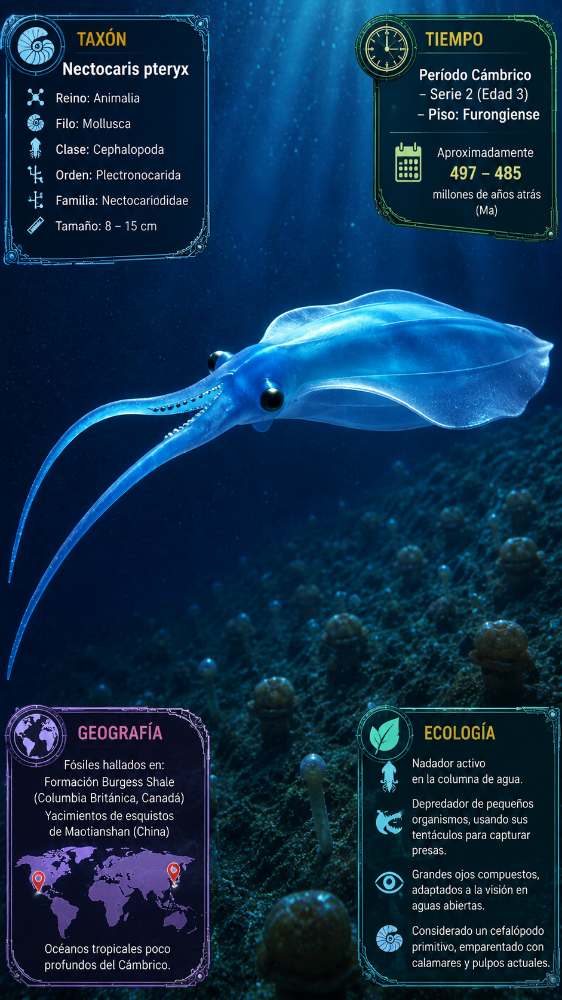
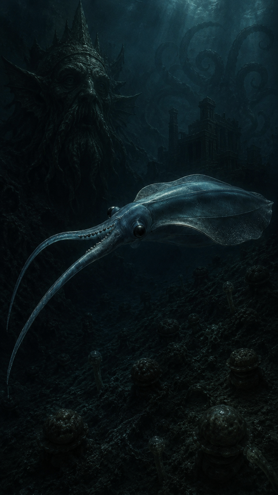
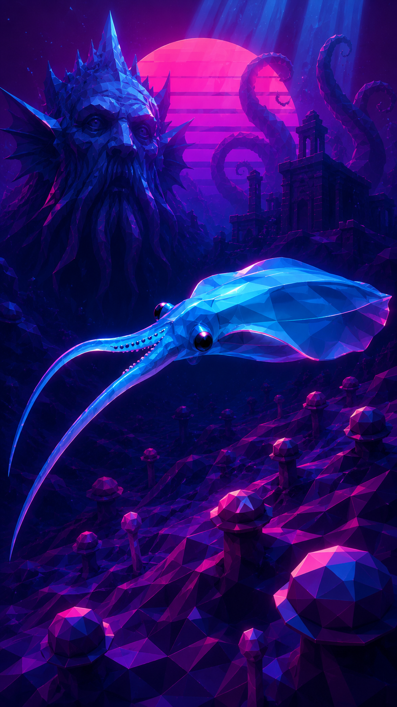

Paleoficha de PalEntropía



TAXÓN:
Nectocaris pteryx
CLADO:
Pan-Mollusca incertae sedis (posible grupo troncal de Cephalopoda)
DIETA:
Carnívoro/Nectónico (depredador activo o carroñero de la columna de agua)
TAMAÑO:
Longitud total aproximada de 2 a 5 centímetros (excluyendo los apéndices cefálicos).
LOCOMOCIÓN:
Nectónica libre; propulsión mediante ondulación de las aletas laterales y control hidrodinámico en aguas abiertas.
TIEMPO:
Cámbrico Medio (Serie 3, aprox. 505 Ma, Formación Burgess Shale)
GEOGRAFÍA:
Laurentia (actual Columbia Británica, Canadá)
EQUIVALENCIA PALEOGEOGRÁFICA:
Plataformas marinas profundas y ambientes de sedimentación fina situados en el talud continental.
AMBIENTE PALEAOECOLÓGICO:
Ecosistemas marinos de plataforma distal con condiciones de baja energía y preservación excepcional.
ECOLOGÍA:
• Flora: Fitoplancton primitivo y comunidades microbianas bentónicas.
• Fauna secundaria: Comunidad de Burgess Shale, incluyendo Waptia, Marrella, priapúlidos y numerosos organismos de cuerpo blando.
• Nichos: Depredador nectónico activo. Presentaba un cuerpo comprimido lateralmente con dos amplias aletas laterales que proporcionaban una natación muy maniobrable. Sus grandes ojos, el sifón muscular y los largos apéndices cefálicos sugieren una estrategia de captura activa de pequeñas presas en la columna de agua.
• Relaciones: Pan-Mollusca. Nectocaris representa uno de los fósiles más enigmáticos del Cámbrico. Su combinación de sifón muscular, grandes ojos y apéndices cefálicos sugiere afinidades con el linaje que conduciría a los cefalópodos, aunque su posición filogenética continúa siendo objeto de debate.
CLIMA:
Wm18 (Cámbrico cálido). Condiciones oceánicas templadas a cálidas que favorecieron la rápida diversificación de la fauna marina durante la Explosión Cámbrica.
ESTADO ECOLÓGICO:
Extinto. Componente exitoso de las primeras comunidades nectónicas del Cámbrico y uno de los organismos más singulares de la biota de Burgess Shale.